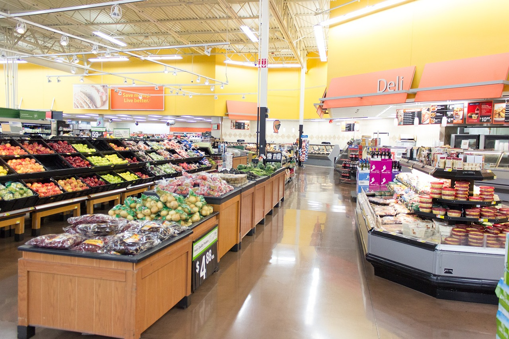
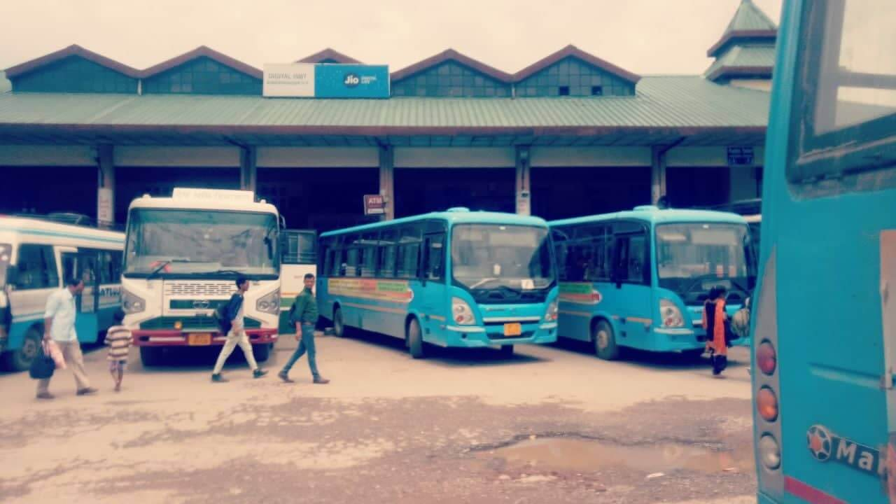

Projects completed
-
Grocery Store
click the above image to view the details of the project.
This project is to simulate a grocery store system, which can used to keep track of the orders that users make. It allows to explore object_oriented design, as well as some other topics.
-
Hotel Project

click the above image to view the details of the project.
This project is to build a booking system for a small hotel. This system will have two parts: a user interface, and a module full of business logic, classes and methods that keep track of which rooms are reserved when. The code is to implement the business logic only.
-
Ride Share
click the above image to view the details of the project.
Rideshare Programs are systems that help people organize carpooling/vanpooling. The project is to read CSV files to get the data of drivers of a rideshare service and their ride history to see how many rides each driver has given and how much money a driver has made.